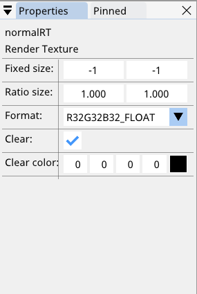

Objects¶
Objects in SHADERed are considered as items that can be accessed by a shader, such as: textures, cubemaps, render textures, buffers, etc…
Texture, Texture3D and cubemaps¶
You can load textures from files:
- by right clicking on the Objects window
- by going to Project → Create
- or you can simply drag and drop an image file into SHADERed (works both for web and desktop version of SHADERed).
In the texture’s properties you can decide what filtering & wrapping mode to use + whether or not to vertically flip the texture.
To bind the texture right click on it → Bind → select a shader pass. The number in the brackets tells you which slot the texture will be bound to.
Texture3D objects can currently only be loaded from .dds files.
Render texture¶
Render texture is a surface to which you can render. In render texture’s properties you can choose the format of the render texture and whether or not to clear it. You can also change the size of a render texture. You can either set it to fixed size (which means that its size will always stay the same regardless of the size of the preview window) or to ratio size (which means that the render texture will be scaled relative to the preview window’s size). For example, render texture with ratio size of 2 will make the RT twice as wide and high as the preview window. 1 will make it as wide and as high as the preview window, 0.5 will make the width and height half of the width and height of the preview window, etc…
You can save the contents of a render texture to a image file by right clicking on it or on its preview and then pressing the Save button.
Audio¶
Binding an audio to your shader will actually bind a 512x2 texture. The first row of the texture will contain FFT data while the second row will contain samples.
Buffer¶
Every buffer must have a format. This format describes how the preview will look and how to handle the data (for example when using the buffer for instancing or vertex buffers). SHADERed will calculate size of a single row based on the buffer’s format. You can set the buffer’s size by entering a number in the “New buffer size (in bytes)” field. For example, if a single row size is 32B and you enter 64 in that field, your buffer will now have two rows.
The CLEAR button will set every field to 0. The PAUSE button will pause the preview of your buffer.
You can load data from textures either in the byte (example: (255, 0, 0, 0)) or float (example: (1.0, 0, 0, 0)) format.
The “LOAD DATA FROM 3D MODEL” button will load 3D model’s vertex positions (float4 / vec4) in the buffer.
The “LOAD RAW DATA” button will load the data from a file as is - without making any modifications to the data. This can be useful when you want to load data from .buf file
2D image¶
2D images can be used as a compute shader’s output. You can modify image’s size and format in the properties.
You can clear the image or load data from an already loaded texture by using the “Data” dropdown.
3D image¶
3D images can be used as a compute shader’s output. You can modify image’s size and format in the properties.
Keyboard texture¶
- The keyboard texture is a 256x3 texture that contains:
- row 0 → current state of the key
- row 1 → keypress event
- row 2 → toggle
Each column/x coordinate in the texture corresponds to a single key code.
Here’s a list of key codes:
const int KEY_BACKSPACE = 8;
const int KEY_TAB = 9;
const int KEY_RETURN = 13;
const int KEY_PAUSE = 19;
const int KEY_CAPSLOCK = 20;
const int KEY_ESCAPE = 27;
const int KEY_PAGEUP = 33;
const int KEY_SPACE = 32;
const int KEY_PAGEDOWN = 34;
const int KEY_END = 35;
const int KEY_HOME = 36;
const int KEY_LEFT = 37;
const int KEY_UP = 38;
const int KEY_RIGHT = 39;
const int KEY_DOWN = 40;
const int KEY_PRINTSCREEN = 44;
const int KEY_INSERT = 45;
const int KEY_DELETE = 46;
const int KEY_0 = 48;
const int KEY_1 = 49;
const int KEY_2 = 50;
const int KEY_3 = 51;
const int KEY_4 = 52;
const int KEY_5 = 53;
const int KEY_6 = 54;
const int KEY_7 = 55;
const int KEY_8 = 56;
const int KEY_9 = 57;
const int KEY_a = 65;
const int KEY_b = 66;
const int KEY_c = 67;
const int KEY_d = 68;
const int KEY_e = 69;
const int KEY_f = 70;
const int KEY_g = 71;
const int KEY_h = 72;
const int KEY_i = 73;
const int KEY_j = 74;
const int KEY_k = 75;
const int KEY_l = 76;
const int KEY_m = 77;
const int KEY_n = 78;
const int KEY_o = 79;
const int KEY_p = 80;
const int KEY_q = 81;
const int KEY_r = 82;
const int KEY_s = 83;
const int KEY_t = 84;
const int KEY_u = 85;
const int KEY_v = 86;
const int KEY_w = 87;
const int KEY_x = 88;
const int KEY_y = 89;
const int KEY_z = 90;
const int KEY_SELECT = 93;
const int KEY_KP_0 = 96;
const int KEY_KP_1 = 97;
const int KEY_KP_2 = 98;
const int KEY_KP_3 = 99;
const int KEY_KP_4 = 100;
const int KEY_KP_5 = 101;
const int KEY_KP_6 = 102;
const int KEY_KP_7 = 103;
const int KEY_KP_8 = 104;
const int KEY_KP_9 = 105;
const int KEY_KP_MULTIPLY = 106;
const int KEY_KP_PLUS = 107;
const int KEY_KP_MINUS = 109;
const int KEY_KP_DECIMAL = 110;
const int KEY_KP_DIVIDE = 111;
const int KEY_F1 = 112;
const int KEY_F2 = 113;
const int KEY_F3 = 114;
const int KEY_F4 = 115;
const int KEY_F5 = 116;
const int KEY_F6 = 117;
const int KEY_F7 = 118;
const int KEY_F8 = 119;
const int KEY_F9 = 120;
const int KEY_F10 = 121;
const int KEY_F11 = 122;
const int KEY_F12 = 123;
const int KEY_NUMLOCK = 144;
const int KEY_SCROLLLOCK = 145;
const int KEY_SEMICOLON = 186;
const int KEY_EQUALS = 187;
const int KEY_COMMA = 188;
const int KEY_MINUS = 189;
const int KEY_PERIOD = 190;
const int KEY_SLASH = 191;
const int KEY_LEFTBRACKET = 219;
const int KEY_BACKSLASH = 220;
const int KEY_RIGHTBRACKET = 221;
const int KEY_QUOTE = 222;
const int BUTTON_LEFT = 245;
const int BUTTON_MIDDLE = 246;
const int BUTTON_RIGHT = 247;
const int MOUSE_SCROLL_UP = 250; // row 0: not used; row 1: 0xFF if user is scrolling up; row 2: value that gets increased by 1 with each scroll
const int MOUSE_SCROLL_DOWN = 251;
SRVs & UAVs¶
There are several mentions of SRV and UAV in SHADERed. You can consider SRV something that makes objects accessible to the shader for reading. UAV is similar but it allows both reading and writing.